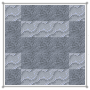
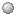
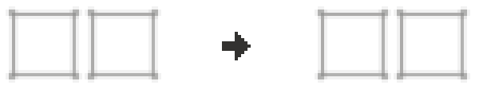
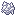
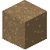
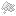

目录
- 这个世界
- 新手入门
- 进阶内容
- 高级建筑材料
- 畜牧业
- 砧
- 引水桥
- 盔甲
- 大桶
- 风箱
- 建造高炉
- 锻铁炉
- Bowls
- 烤面包
- 木炭炉
- 木炭坑
- 凿子
- Composter
- Crankshafts
- 农作物
- 坩埚
- 乳制品
- 伤害类型
- 食物保鲜
- Dye
- 堆肥
- 耐火粘土
- 钓鱼
- 助焊剂
- 宝石
- Glassworking
- Glass Products
- 篝火烧烤
- 加热
- 保持土壤湿润
- Jarring
- 灯
- 制皮术
- 光源
- Mechanical Power
- Minecarts
- 淘金
- Papermaking
- 宠物
- 篝火大锅
- 火药桶
- 勘探
- Pumps
- 手推磨
- 沙拉
- 三明治
- 命名台
- 洗矿槽
- 炼钢
- Support Beams & Collapses
- 札札弄机杼
- 木桶
- (Addon) Firmalife扩展模组

Bowls
Bowls
Bowls are a versatile tool which can be used to make Salads, to make Soups, to Salt meat, or to apply Powder to Glass in order to change the resulting glass's color.
Bowls can be made both from Ceramic, by knapping a bowl out of clay, and then firing them.

Multiple unfired bowls can be made from one knapping.
Wooden Bowls



3
Bowls can also be made out of wood via crafting them together with Glue
Glue can be made by soaking Bone Meal in a barrel of Limewater.



8000 Ticks

Powders
The Powder Bowl can hold up to 16 of a given powder. To insert items, 右键 while holding the powder. To extract items, 右键 with an empty hand.
Shift allows extracting the entire contents of the bowl.

盐
If there is salt in the bowl, clicking with unsalted raw meat will salt the meat. This is the same as crafting the meat with the salt in your inventory.